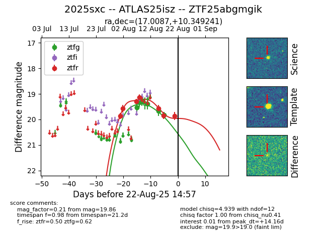

Target 2025sxc at 2025-08-22 16:16, see:
FINK: fink-portal.org/ZTF25abgmgik
Lasair: lasair-ztf.lsst.ac.uk/objects/ZTF25abgmgik
ALeRCE: alerce.online/object/ZTF25abgmgik
TNS: wis-tns.org/object/2025sxc
YSE: ziggy.ucolick.org/yse/transient_detail/2025sxc
alt names
ZTF25abgmgik (ztf,alerce)
2025sxc (tns,yse)
ATLAS25isz (atlas)
coordinates:
equatorial (ra, dec) = (17.0087,+10.34924)
galactic (l, b) = (129.6170,-52.30695)
photometry
last atlasc=19.37, atlaso=19.14, ztfg=19.83, ztfr=19.86
1 atlasc, 2 atlaso, 9 ztfg, 7 ztfr detections
